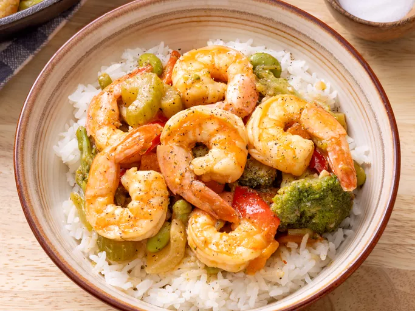

Shrimp Stir Fry

Description
The Shrimp Stir Fry recipe is a quick and easy dish that uses frozen stir-fry vegetables and frozen shrimp. The ingredients are cooked in sesame oil, then a simple sauce made from chicken stock, soy sauce, and cornstarch is added to thicken the mixture. This fast-cooking meal is ready in about 25 minutes, making it an ideal choice for a speedy weeknight dinner.
Ingredients
- 1 cup chicken stock
- 1 tablespoon reduced-sodium soy sauce
- 1 tablespoon cornstarch
- 1 tablespoon minced garlic
- Salt and ground black pepepr to taste
- 3 tablespoons sesame oil
- 16 ounces frozen stir-fry vegetables
- 20 uncooked medium shrimp, peeled and deveined
Steps
- Gather all ingredients.
- Mix chicken stock, soy sauce, cornstarch, and garlic in a bowl; season with salt and pepper.
- Heat sesame oil in a large skillet over medium-high heat until oil shimmers; cook and stir vegetables in hot oil until softened, about 4 minutes.
- Add shrimp; cook and stir until shrimp begin to turn pink, about 3 minutes.
- Stir chicken stock mixture into vegetable-shrimp mixture. Continue to cook and stir until vegetables and shrimp are coated and sauce is thickened, about 5 minutes more.
Home Page
Aziz's Recipes Home Page